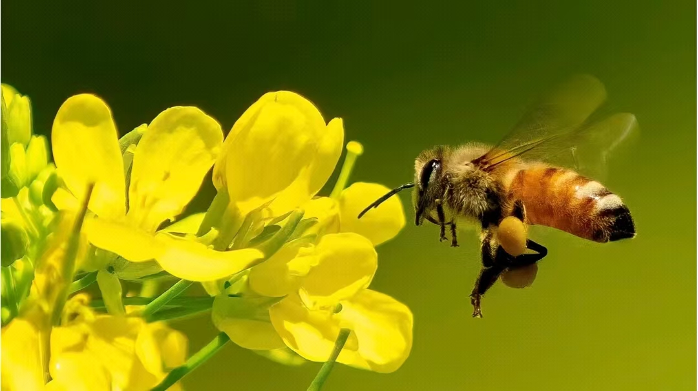
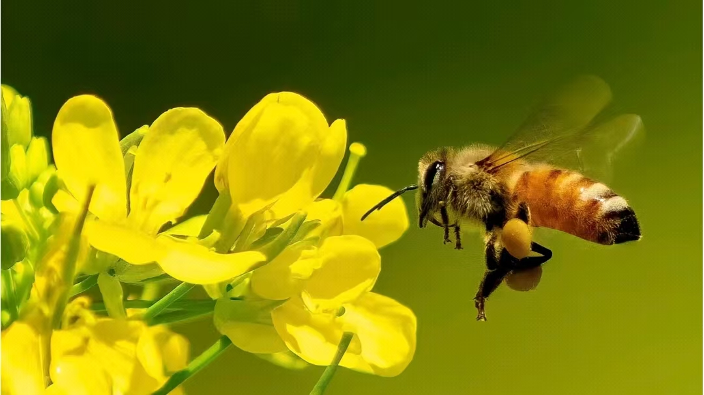

蜜蜂是社会性昆虫，属于膜翅目蜜蜂科。它们以花粉和花蜜为食，通过授粉对植物繁殖至关重要。蜜蜂群体由蜂王、雄蜂和工蜂组成，分工明确，共同维护蜂 巢。蜜蜂能酿造蜂蜜，生产蜂蜡，对人类有重要的经济和生态价值。蜜蜂种类繁多，常见的有西方蜜蜂和中华土蜂等。
蜂蜜是蜜蜂采集植物花蜜，经过充分酿造而成的天然甜味物质。它含有多种维生素、矿物质和氨基酸，具有较高的营养价值和保健功能。蜂蜜味道甘甜……
蜂灸是一种传统疗法，它结合了蜂毒的药理作用与中医学原理，通过在人体特定穴位上施以蜂针进行治疗，以达到疏通经络、调节气血、平衡阴阳……
蜂蜡是由蜜蜂分泌的一种天然物质，广泛用于化妆品、医药、食品等领域。它具有抗菌、抗炎和消炎等特性，对于治疗烫伤、创伤、湿疹、皮肤过……
蜜蜂种类繁多，主要分为七个属，包括西方蜜蜂、东方蜜蜂、小蜜蜂等。西方蜜蜂和东方蜜蜂是最常见的蜜蜂种类，广泛用于养蜂业。不同种类的蜜……
解读千年养蜂智慧，溯源非遗传统技艺。
welcome to mifengjiang|蜜蜂匠欢迎您！

 
